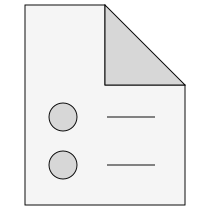
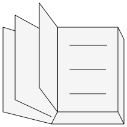

Library Electrical.Digital is a free Modelica package providing components to model digital electronic systems based on combinational and sequential logic in a convenient way. This package contains the User's Guide for the library and has the following content:
| Name | Description |
|---|---|
|  ReleaseNotes | Release notes |
|  Literature | Literature |
| Contact |